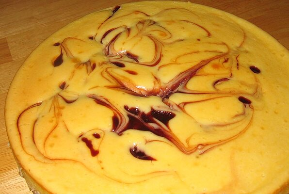

Raspberry Cheesecake

Ingredients
- 2 (8 ounce) packages cream cheese
- 1 cup white sugar
- 1 pint heavy cream
- 4 (7 ounce) packages oval butter sandwich cookies with chocolate filling (eg Pepperidge Farm Milano)
- 1 (21 ounce) can raspberry pie filling
Directions
- Line the bottom and sides of a 9 inch springform pan with cookies. Pour half of the cheese mixture over the cookies. Top with half the raspberry filling and spread evenly. Place another layer of cookies over raspberry and repeat cheese and raspberry layers. Chill in refrigerator 4 hours or overnight before unmolding and serving.
- In a large bowl, cream together cream cheese and sugar. Set aside. In a separate bowl, whip cream until stiff peaks form. Fold whipped cream into cream cheese mixture.